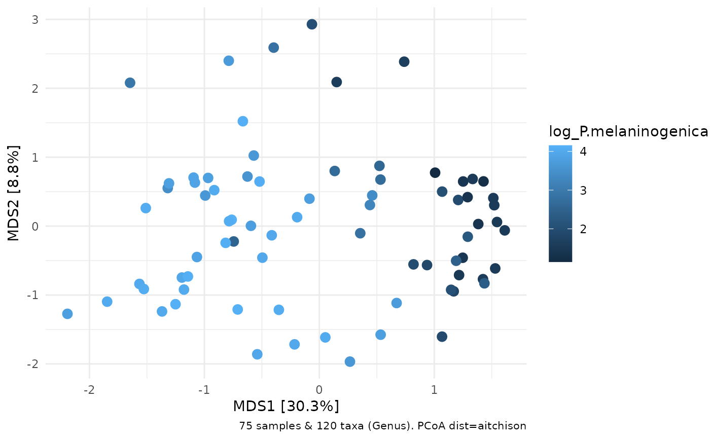
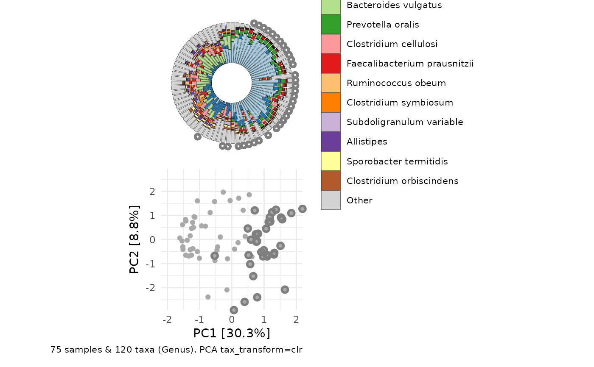

Circular compositional barplot sorted by ordination angle
Source:R/ord_plot_iris.R
ord_plot_iris.RdUse with ord_calc output as data argument.
Order of samples extracted from ordination axes in data.
Best paired with ordination plot made from same ord_calc output.
ord_plot_iris( data, tax_level, axes = 1:2, n_taxa = 10, ord_plot = "none", taxon_renamer = function(x) identity(x), palette = c("grey90", rev(distinct_palette(n_taxa))), anno_colour = NULL, anno_colour_style = list(), anno_binary = NULL, anno_binary_style = list(), keep_all_vars = FALSE, scaling = 2, count_warn = TRUE, ... )
Arguments
| data | ps_extra list output of ord_calc |
|---|---|
| tax_level | taxonomic aggregation level (from rank_names(ps)) |
| axes | which 2 axes of ordination to use for ordering bars |
| n_taxa | how many taxa to colour show distinct colours for (all other taxa grouped into "other"). |
| ord_plot | add a matching ordination plot to your iris plot ('list' returns separate plots in a list, 'above'/'below' uses patchwork to pair plots together into one) |
| taxon_renamer | function to rename taxa in the legend |
| palette | colour palette |
| anno_colour | name of sample_data variable to use for colouring geom_segment annotation ring |
| anno_colour_style | list of further arguments passed to geom_segment e.g. size |
| anno_binary | name(s) of binary sample_data variable(s) (levels T/F or 1/0) to use for filtered geom_point annotation ring(s) (annotates at TRUE values) |
| anno_binary_style | list of further arguments passed to geom_point e.g. colour, size, y, etc. |
| keep_all_vars | slows down processing but is required for any post-hoc plot customisation options |
| scaling | Relevant for constrained ordinations: Type 2, or type 1 scaling. See https://sites.google.com/site/mb3gustame/constrained-analyses/rda Either "species" or "site" scores are scaled by eigenvalues, and the other set of scores is left unscaled (from ?vegan::scores.cca) |
| count_warn | warn if count data are not available? i.e. phyloseq otu_table is not positive integers and ps_extra counts slot is NULL |
| ... | extra args passed to comp_barplot e.g. bar_width |
Value
ggplot
Details
data must also contain counts table if taxa were transformed (e.g. for clr PCA ordination)
(i.e. you must have used tax_transform with keep_counts = TRUE, if transformation was not "identity")
You cannot set a variable fill aesthetic (only fixed) for the annotation points, as the fill is used for the taxonomic composition bars
Examples
library(dplyr) library(ggplot2) data("dietswap", package = "microbiome") # although these iris plots are great for 100s of samples # we'll take a subset of the data (for speed in this example) ps <- dietswap %>% ps_filter(timepoint %in% c(1, 2)) %>% # copy an otu to the sample data ps_otu2samdat("Prevotella melaninogenica et rel.") %>% # create a couple of useful variables ps_mutate( female = sex == "female", african = nationality == "AFR", log_P.melaninogenica = log10(Prevotella.melaninogenica.et.rel. + 1) ) # define a function for taking the end off the long genus names in this dataset tax_renamer <- function(tax) { stringr::str_remove(tax, " [ae]t rel.") } ord <- ps %>% tax_agg("Genus") %>% dist_calc("aitchison") %>% ord_calc(method = "PCoA") # ordination plot for comparison ord %>% ord_plot(color = "log_P.melaninogenica", size = 3)ord_plot_iris( data = ord, tax_level = "Genus", n_taxa = 10, anno_colour = "nationality", anno_colour_style = list(size = 3), anno_binary = "female", anno_binary_style = list(shape = "F", size = 2.5), taxon_renamer = tax_renamer ) + scale_colour_brewer(palette = "Dark2")# It is also possible to use comp_barplot customisation arguments # like bar_width and bar_outline_colour, and to make interactive iris plots # using ggiraph: hover_over_me <- ord_plot_iris( data = ord, tax_level = "Genus", n_taxa = 10, anno_colour = "nationality", anno_colour_style = list(size = 3), anno_binary = "female", anno_binary_style = list(shape = "F", size = 2.5), taxon_renamer = tax_renamer, interactive = TRUE, bar_width = 0.8, bar_outline_colour = "black" ) + scale_colour_brewer(palette = "Dark2") ggiraph::girafe(ggobj = hover_over_me) # Using PCA for ordination after transformations (e.g. clr) means the untransformed taxonomic # data are only available for plotting as compositions if you transformed with # tax_transform(keep_counts = TRUE) and your original data were in fact counts. # Compositional data will also work, and you can set count_warn to FALSE to avoid the warning clr_pca <- ps %>% tax_agg("Genus") %>% tax_transform("clr") %>% ord_calc(method = "PCA") # you can generate a simple paired layout of ord_plot and iris plot # or separately create and pair the plots yourself, for more control # simple pairing ord_plot_iris( data = clr_pca, n_taxa = 12, tax_level = "Genus", taxon_renamer = tax_renamer, ord_plot = "below", bar_width = 0.8, bar_outline_colour = "black", anno_binary = "african", anno_binary_style = list( y = 1.08, colour = "gray50", shape = "circle open", size = 1, stroke = 1.5 ) )# manual pairing plot1 <- clr_pca %>% ord_plot( plot_taxa = 6:1, tax_vec_length = 0.6, colour = "gray50", shape = "nationality", taxon_renamer = tax_renamer, auto_caption = NA, center = TRUE, ) + scale_shape_manual(values = c(AFR = "circle", AAM = "circle open")) iris <- ord_plot_iris( data = clr_pca, n_taxa = 15, tax_level = "Genus", taxon_renamer = tax_renamer, anno_binary = "african", anno_binary_style = list(y = 1.05, colour = "gray50", shape = "circle", size = 1) ) + # shrink legend text size theme(legend.text = element_text(size = 7)) cowplot::plot_grid(plot1, iris, nrow = 1, align = "h", axis = "b", rel_widths = 3:4)# you can add multiple rings of binary annotations ord_plot_iris( data = clr_pca, n_taxa = 15, tax_level = "Genus", taxon_renamer = tax_renamer, anno_binary = c("african", "female"), anno_binary_style = list( colour = c("gray50", "coral"), shape = c("circle", "F"), size = c(0.5, 2) ) ) + theme(legend.text = element_text(size = 7))